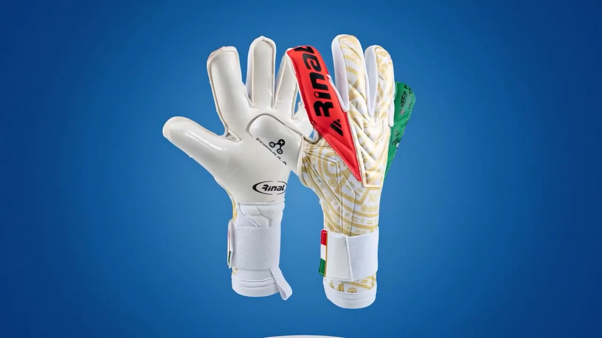

Guantes de portero · México
El arco no se
defiende a medias
Guantes para el que se planta bajo los tres palos cada fin de semana. Cortes, látex y tallas explicados sin humo, para que compres el guante correcto a la primera.
BTP · MX
000 %